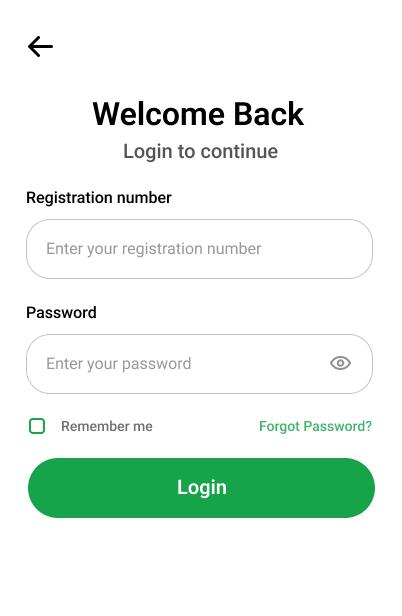
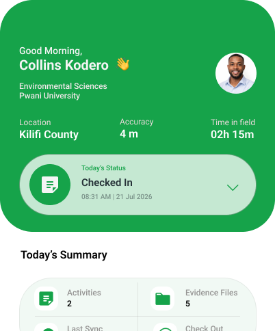
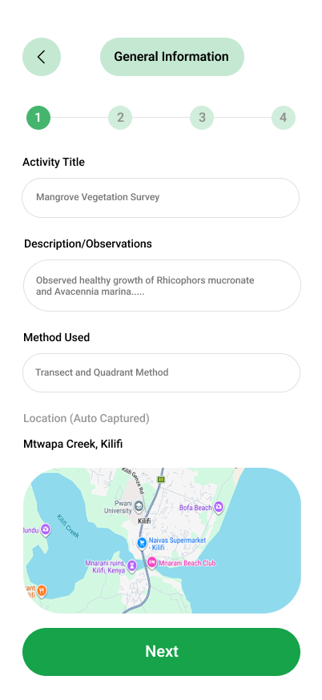
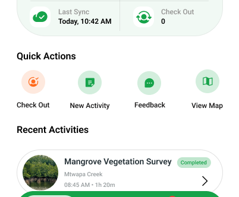
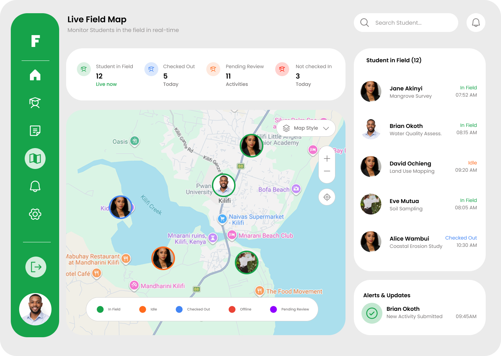
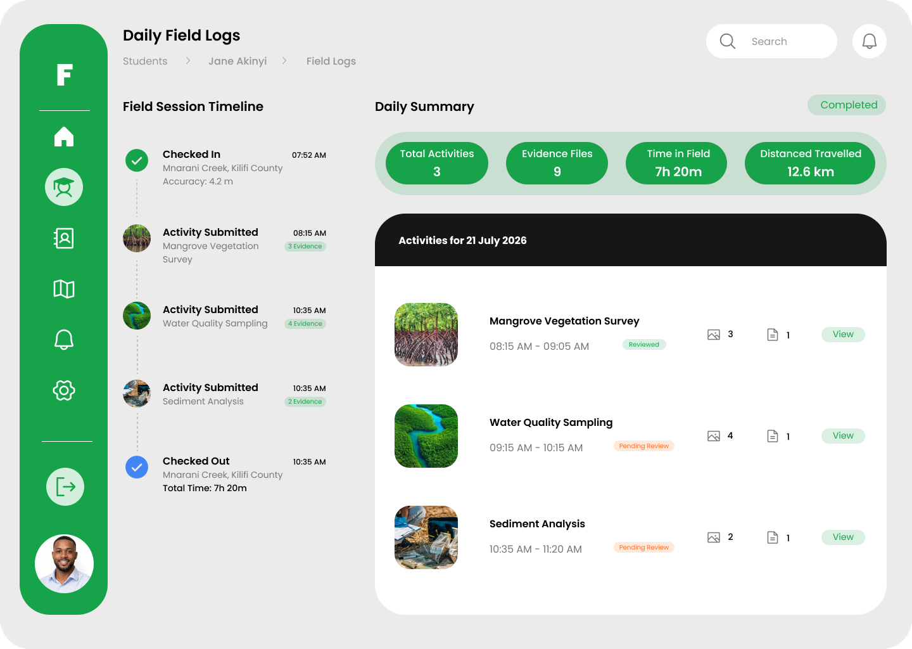

Student App Manual
The student application is designed to help you track your fieldwork activities, log your locations, and submit evidence easily on the go.
Before You Start: First-Launch Setup
FieldTrack requests these permissions when the student app opens. Choose Allow for each prompt so check-ins, updates, and evidence uploads work correctly.
- Location: Choose Allow while using the app. Keep your phone's Location/GPS turned on whenever you are using FieldTrack or checking in.
- Notifications: Choose Allow to receive activity updates and supervisor feedback.
- Camera and files: Allow access when prompted so you can capture and attach field evidence.
If a prompt was denied, open Android Settings > Apps > FieldTrack > Permissions and enable the required permission. Turn Location back on from Quick Settings before checking in.

1. Logging In
Use your registered student email and password to log in. Upon first login, you may be prompted to grant location and camera permissions.
- Enter your credentials.
- Tap Login to access your dashboard.
- Ensure GPS is enabled on your device.

2. The Dashboard & Checking In
Before you begin your fieldwork activities for the day, you must Check In. This starts tracking your session and location.
- Tap the Check In button on the home screen.
- Wait for the app to acquire your current GPS coordinates.
- Your status will change to "Active" and the session timer will begin.

3. Creating a Field Log
Throughout your session, you can create logs to document your findings, observations, and tasks completed.
- Tap the + New Log or Add Activity button.
- Fill in the activity title, description, and any specific findings.
- The log automatically attaches your current GPS location.

4. Uploading Evidence
Evidence is crucial for verifying your fieldwork. You can upload photos, videos, audio notes, and documents.
- Open a draft field log.
- Select the type of media you want to attach (Camera, Gallery, Audio, Document).
- Wait for the upload to complete before submitting the log.

5. Checking Out
At the end of your fieldwork day, remember to check out to stop tracking and summarize your session.
Tap Check Out on the dashboard. You will see a summary of your session duration and distance travelled.
Supervisor App Manual
The supervisor application allows you to monitor your assigned students, review their activities in real-time, and approve or request revisions for their submissions.

1. Supervisor Dashboard
The dashboard provides an overview of your students' statuses—who is currently in the field, who is idle, and recent submissions awaiting review.
- View quick stats on active sessions.
- See a list of pending activities needing your attention.

2. Tracking Students on the Map
You can view the real-time or historical locations of your students during their active sessions.
- Navigate to the Map tab.
- Select a specific student to see their check-in point, route, and locations where logs were created.

3. Reviewing Field Logs
When a student submits a field log, you can review the details, location data, and attached evidence.
- Tap on a pending submission.
- Read the student's description and methodology.
- Review the attached evidence (Photos, Videos, Audio, PDFs).

4. Approving or Requesting Revisions
After reviewing, you must provide feedback and a final status for the log.
- Tap Review Submission.
- Provide a rating and detailed comments.
- Select either Approve or Request Revision. The student will be notified immediately.